Other worlds. One night.vargafutureparty.com
Welcome to
VargaFuture
Party
2050
The future is who you meet
Vision
20
If you put the 20 smartest people in a room, you can change the world.
Tonight
50
We have 50.
It’s enough to change the world at least twice.
Goal
Make 2050 real with people in this room
What we have · The App
We are all cyborgs
Everyone has a chip tonight. Your phone reads it.
01Tap a chip
02Meet their Kin
03Collect the room
Varga · 2050Party chip
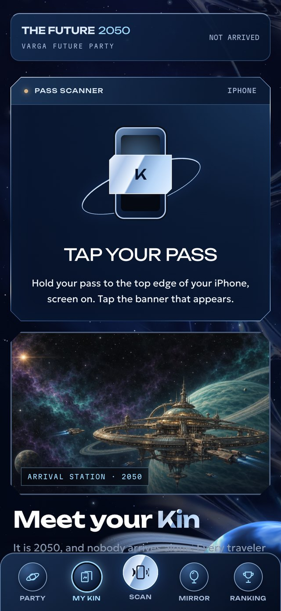
Kin foundIlu
On the walls tonight: The Big Muse
Topics for inspiration
Inspiration 1 of 6
Future 2050: the show reel
Six facts about how books guess the future.
Inspiration 3 of 6
Ideas of 2050
Every child has an AI tutor
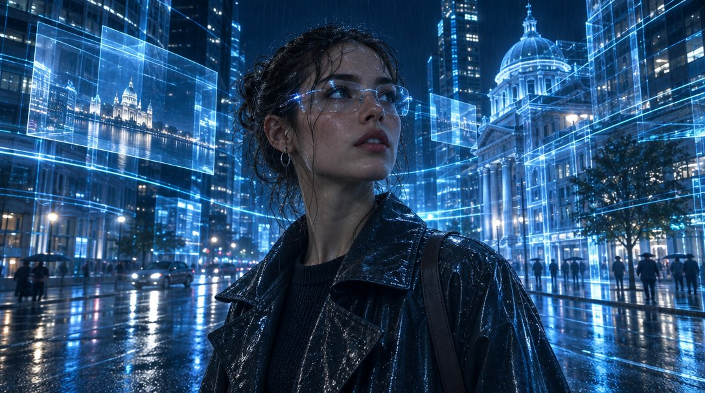
You can wear reality
The brain connects to the cloud
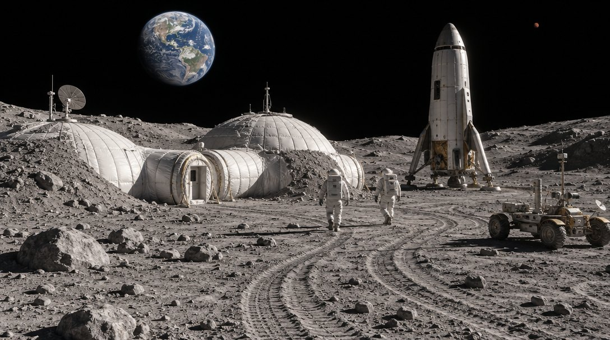
The Moon first, Mars later
Inspiration 4 of 6
2050 in 78 tweets
What people wrote on X about 2050, word for word.
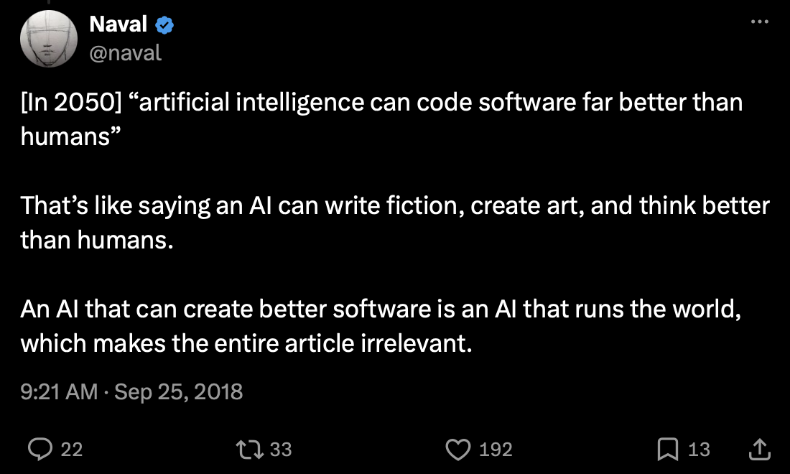
Inspiration 5 of 6
Futurists on 2050


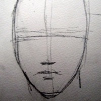

Vinod Khosla · Elon Musk · Peter H. Diamandis · Kevin Kelly · Ramez Naam · Balaji Srinivasan · Noah Smith · Yuval Noah Harari · Naval · Daniel Kokotajlo · Hannah Ritchie · Stuart Candy
Where at least three of the twelve agree
Strong AI arrives before 2050
Energy moves off fossil fuels
The world gets older
Climate damage can be limited, under conditions
Inspiration 6 of 6
2050 futuristic concept ideas
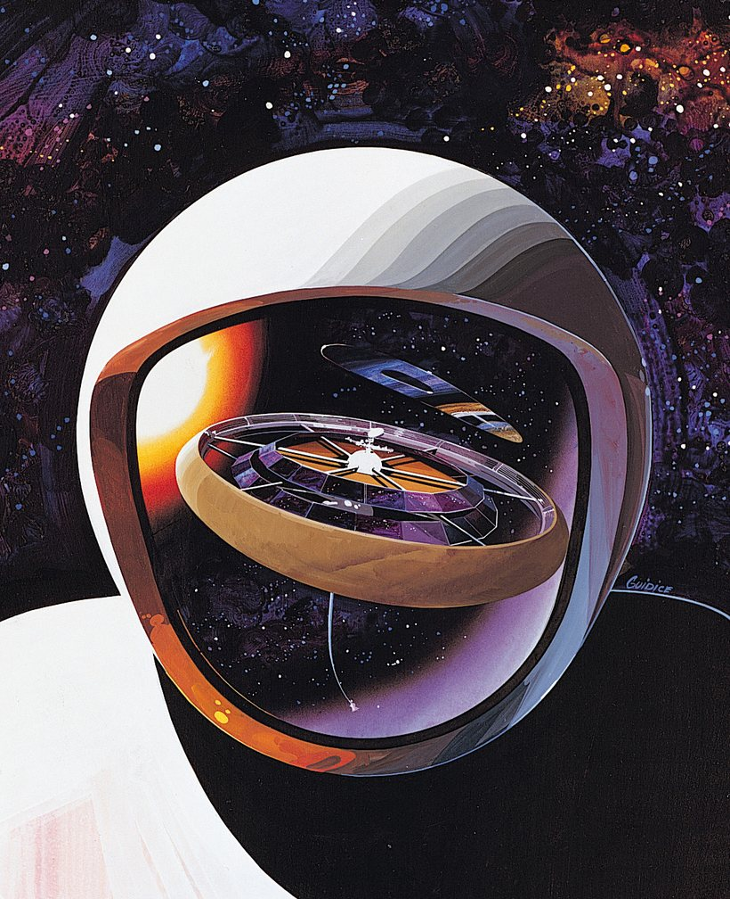


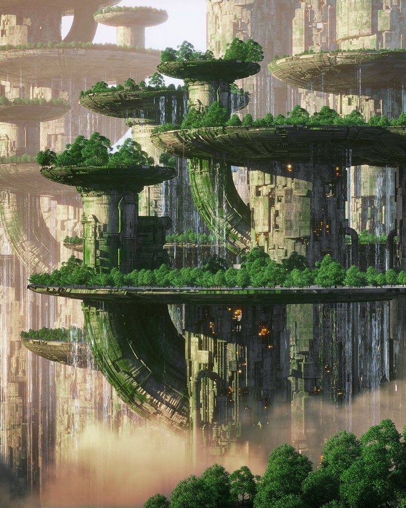

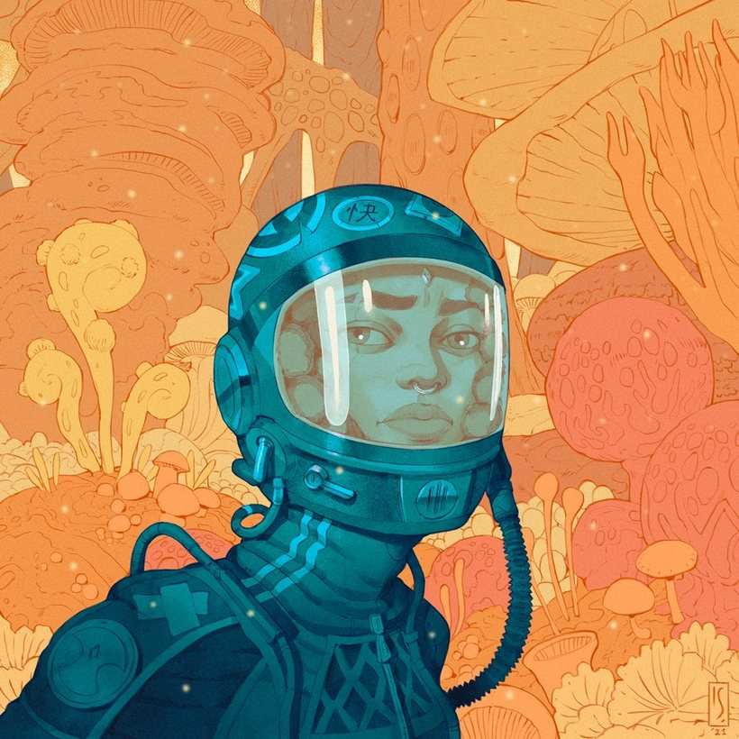
Rick Guidice (NASA) · Erik van Helvoirt · Neil Blevins · Annibale Siconolfi · Paul Chadeisson · Karl Schulschenk. Six of 377 pictures of the future from X
Tonight at the party
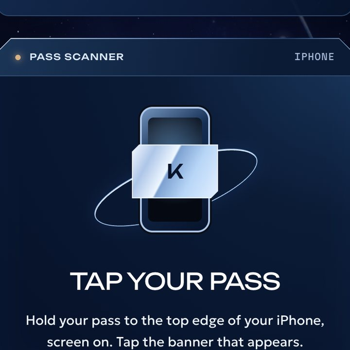
01
App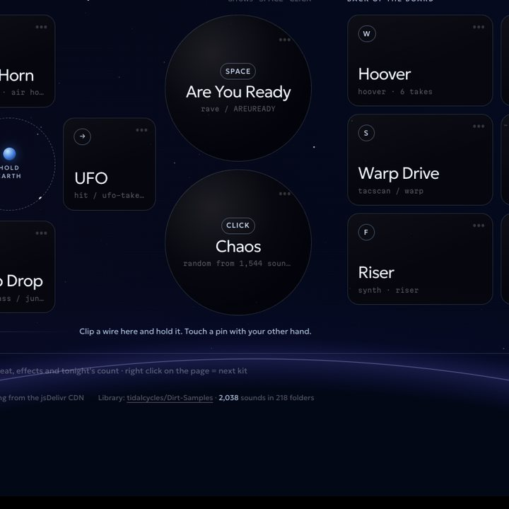
02
Play 2050 soundboard03
Visual effect camera04
Tea ceremony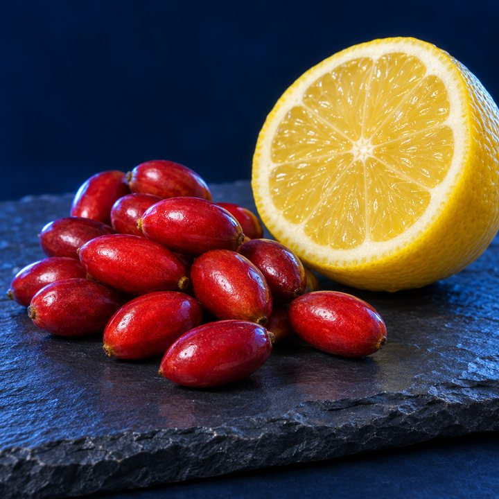
05
Miracle berries06
Dumplings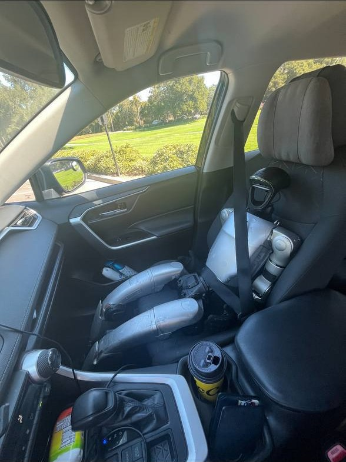
07
Robot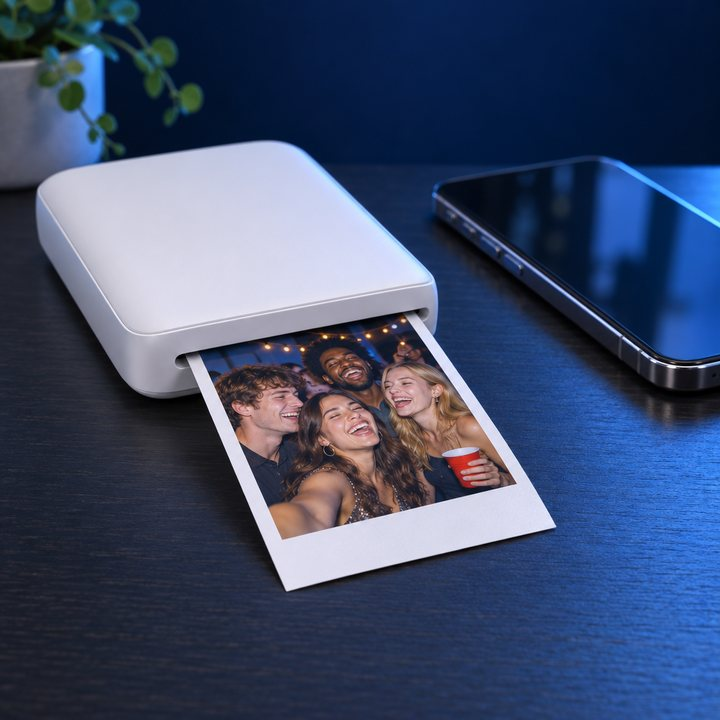
08
Mini-printer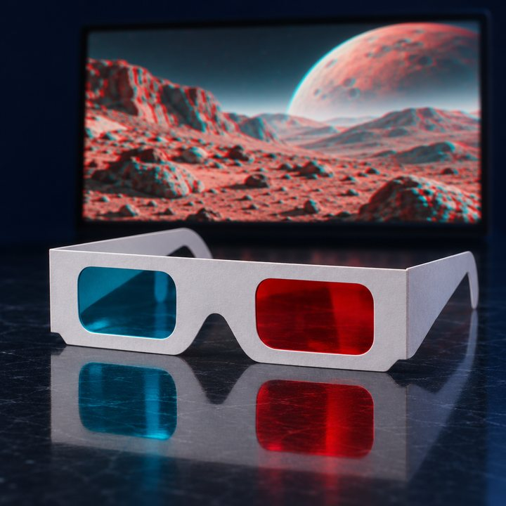
09
3D glasses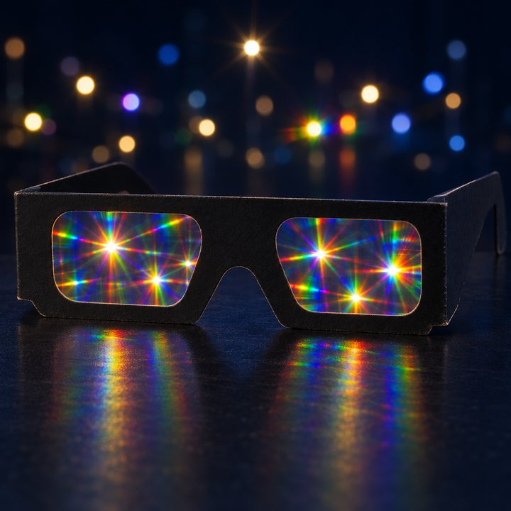
10
Diffraction glassesTry every one of them tonight.
Station 1 of 9
Play 2050: play with fruits
Fruit is wired into a Makey Makey. Hold EARTH, touch a fruit, and it plays.
Eight kits, from Liftoff to Magic Keys. Jam mode keeps everyone in time and in key.
vargafutureparty.com/play · Enter for stage mode

Station 2 of 9
Visual effect camera: Mirror 2050
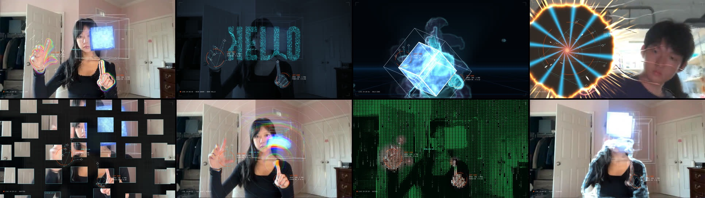
Stand in front of the camera and use your hands: liquid air, a particle swarm, a hologram cube, portals and four more effects that went viral on X.
vargafutureparty.com/mirror
Tea ceremony · Mini demo
Blue tea + lemon = purple
Blue tea is butterfly pea flower. It changes colour with acid.
Add lemon and watch.
Purple.
Station 4 of 9
Miracle berries
Let a berry melt on your tongue, then bite into a lemon.
The lemon tastes sweet.
Sour
Sweet
Station 5 of 9 · Food
Dumplings
Fuel for the future.
Station 6 of 9 · Robot
What’s a future with no robots?
Ours is here tonight. It even wears a seat belt. Go say hi.
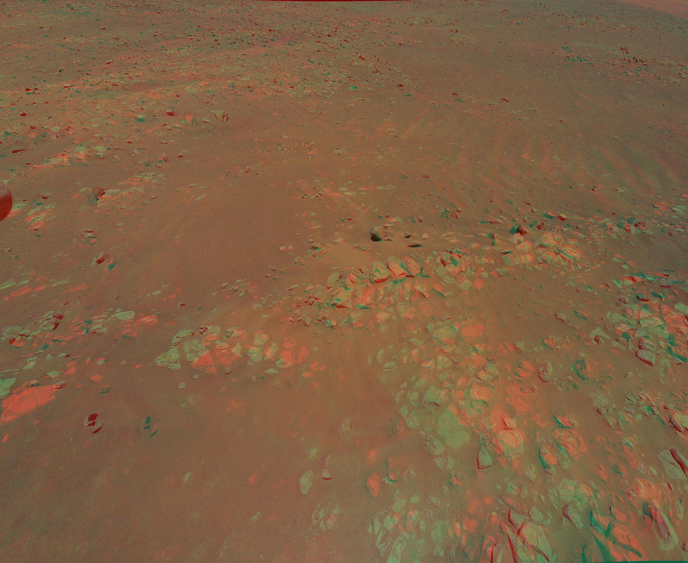
Station 8 of 9 · 3D glasses
Put on the glasses: Mars in 3D
Raised ridges in Jezero Crater, seen from NASA’s Ingenuity helicopter. More of Mars in 3D all night at vargafutureparty.com/mars.
Red-blue anaglyph · NASA/JPL-Caltech
Station 9 of 9
Diffraction glasses
Put them on and look at the dots. Every point of light turns into a rainbow.
Predicting the future
We can predict the future
“An AI that can create better software is an AI that runs the world.”
Naval on X, 25 September 2018, about 2050
Read it again in 2026.
Predicting the future
Arthur C. Clarke
BBC Horizon, 1964. Clarke predicts working from anywhere and machines that think.
Question for the room
It’s a Tuesday in San Francisco in 2050. What would a teenager find absurd about something we do every day in 2026?